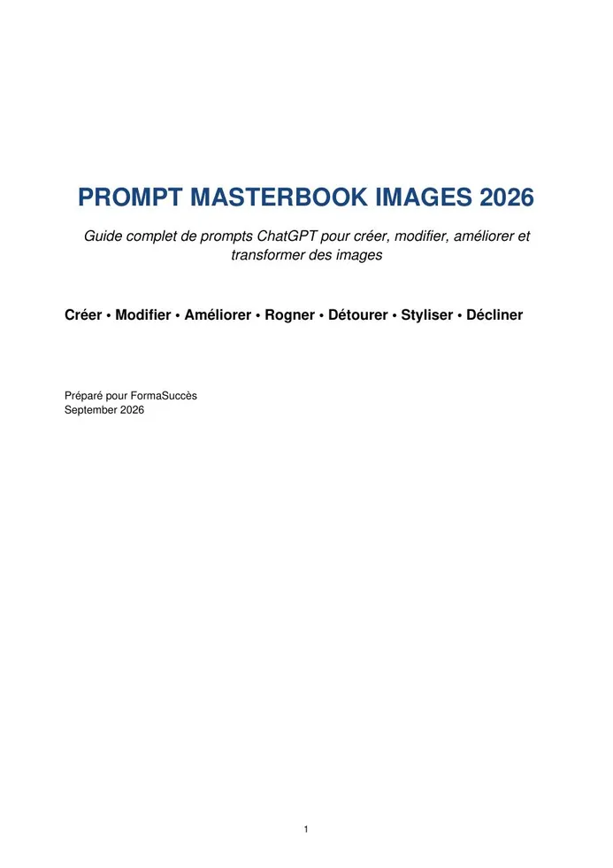

PDF gratuit
Prompt Masterbook 2026 — ChatGPT & Claude
Un guide de prompt engineering couvrant recherche, rédaction scientifique, génération d’images, analyse de documents, code, productivité et méthodes avancées de structuration.
Aucun compte, aucun formulaire : cliquez sur le bouton de téléchargement et récupérez directement le PDF.

Un guide de prompt engineering couvrant recherche, rédaction scientifique, génération d’images, analyse de documents, code, productivité et méthodes avancées de structuration.

Un guide entièrement consacré aux images : création, modification, amélioration, recadrage, détourage, retouche, transformation de style, visuels sociaux et e-commerce.
Cette page est prête pour ajouter d’autres eBooks. Dupliquez simplement une carte, placez le nouveau PDF dans assets/ebooks/ et sa couverture dans assets/images/.
Le premier eBook couvre les usages généraux de ChatGPT et Claude ; le second se concentre sur les images et les retouches.
Prompts pour problématique, revue de littérature, méthodologie, discussion, synthèse et contrôle des citations.
Rapports professionnels, CV ciblé, analyse de PDF, tableurs, procédures, code et automatisation.
Prompts pour portraits, produits, flyers, recadrage, arrière-plan, restauration et styles illustrés.
Oui. Les PDF proposés sur cette page sont téléchargeables gratuitement et sans création de compte.
Oui. Le bouton « Lire en ligne » ouvre le PDF directement dans le navigateur.
Oui. La page a été structurée pour accueillir facilement d’autres eBooks et catégories.